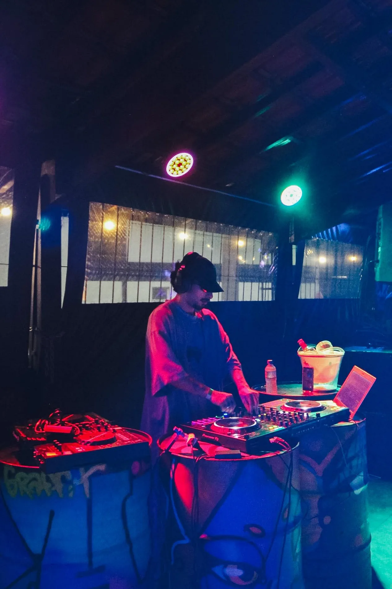
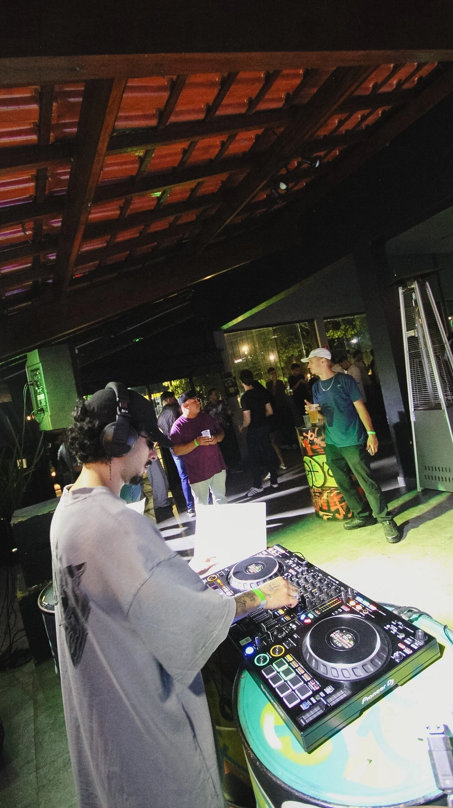
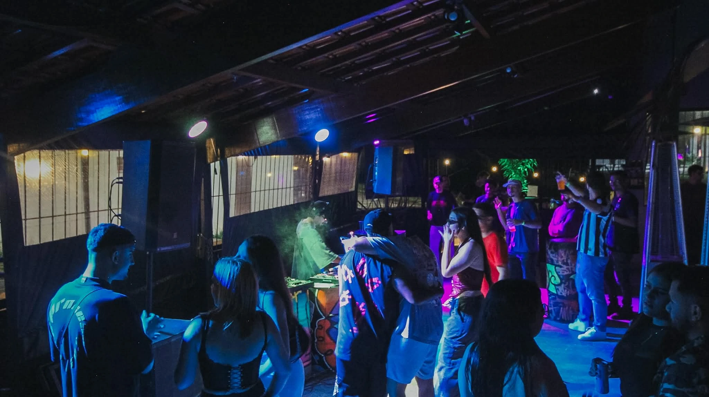
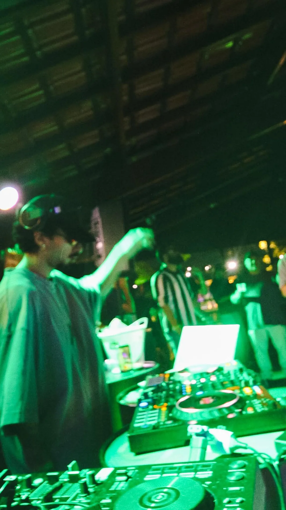

MAGALL
com a alma do underground.
with an underground soul.

Quem é
Magall?
Meet
Magall.
Magall é o projeto de Tech House do DJ e produtor Vinicius Magalhães. Com uma identidade visual marcante e uma estética urbana autêntica, Magall mistura groove, energia e atitude nas pistas.
Suas produções e sets transitam entre o underground e o mainstream, com sonoridades que conectam o público em experiências intensas e envolventes.
Magall não segue tendências — ele dita o próprio ritmo. Com presença de palco, estilo único e beats que grudam na mente, o projeto vem se consolidando como uma nova força no cenário eletrônico brasileiro.
Magall is the Tech House project of DJ and producer Vinicius Magalhães. With a striking visual identity and authentic urban aesthetic, Magall blends groove, energy and attitude on the dancefloor.
His productions and sets move between underground and mainstream sounds, connecting audiences through intense and immersive experiences.
Magall doesn't follow trends — he sets his own pace. With a unique style, stage presence and memorable beats, the project is building its place in Brazil's electronic music scene.
NEXØ
Music Records
A NEXØ é uma gravadora independente fundada por Gaal e Magall, dedicada a House, Tech House e suas vertentes, com um conceito totalmente underground.
Criada como um ponto de conexão entre artistas, som e identidade sonora, a NEXØ aposta em curadoria rigorosa, estética futurista e lançamentos que fogem de fórmulas comerciais — mantendo a essência crua da cultura club.
NEXØ is an independent record label founded by Gaal and Magall, officially launched on December 12, 2025. It focuses on House, Tech House and related sounds with a distinctly underground vision.
With careful curation and a futuristic identity, NEXØ connects artists, the dancefloor and creative vision, prioritizing authenticity over commercial formulas.

Tracks &
DJ Sets

Live moments.


Vamos fazer a
pista vibrar?
Let's move
the dancefloor.
bookingsmagallmusic@gmail.com ↗FOR BOOKINGS / EVENTS / COLLABORATIONS
Redes sociais.
Stay connected.